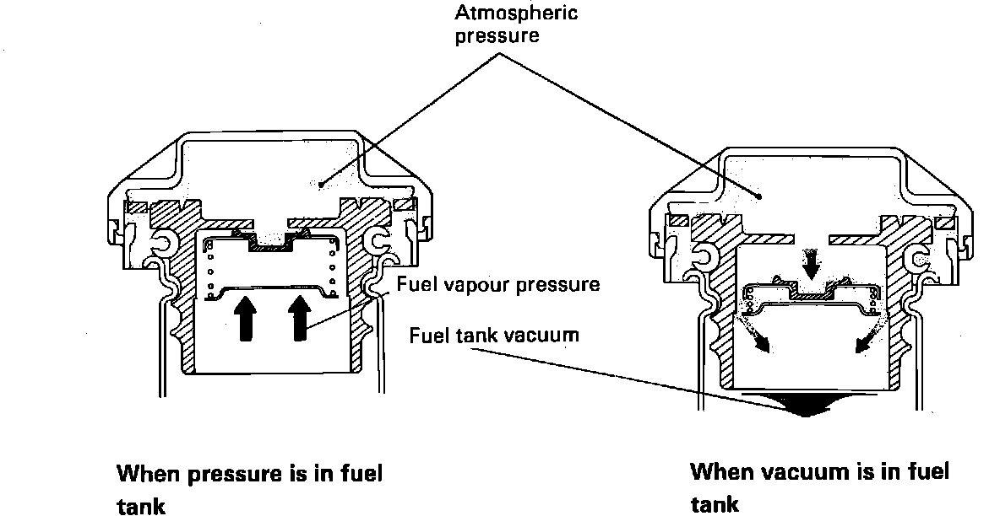

Fuel Filler Cap: Description and Operation
Fuel Filler Cap Operation:

PURPOSE
The fuel filler cap is used to prevent Hydrocarbon (HC) vapors from escaping into the atmosphere.
OPERATION
As fuel tank pressure changes, the filler cap equalizes the pressure in the tank with atmospheric pressure.
CONSTRUCTION
The fuel filler cap is equipped with a relief valve to prevent the escape of fuel vapors to the atmosphere and to prevent the collapse of the fuel tank under negative pressure.